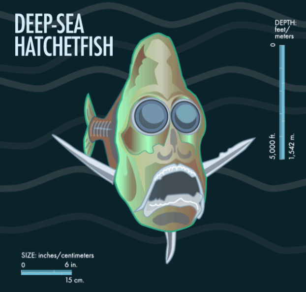

The Sunlight Zone
The sunlight zone, also called the epipelagic zone, is the topmost ocean layer. Most of the ocean's plants survive on this level because of the fact that plants need sunlight and this layer has it.
This zone is also home to most of the marine life we know. This layer is warm and bright enough to see and study, so there is a lot of research done on this zone.
The Trench Zone
The trench zone, also known as the hadal zone, is the deepest part of the ocean. There is no sunlight on this layer. It has freezing conditions, immense pressure, and absolute darkness. Despite these conditions, there is still some ocean life. The creatures that survive on this layer look very different than the sunlight zone.
